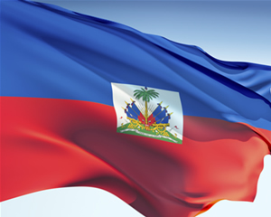
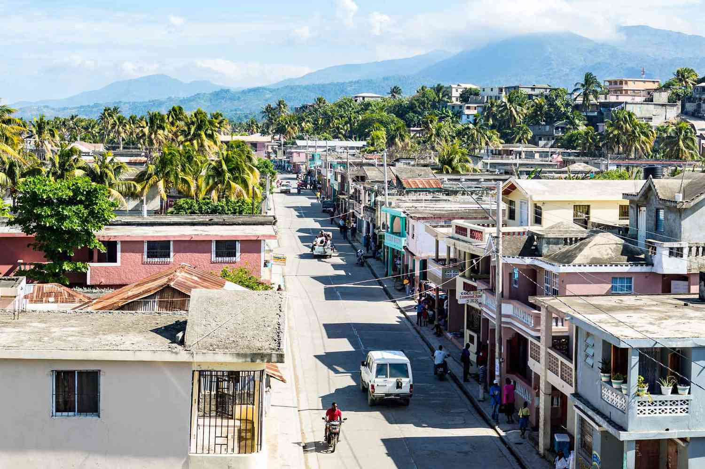
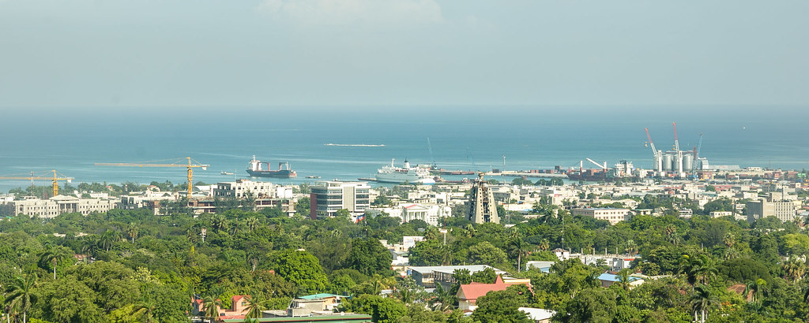
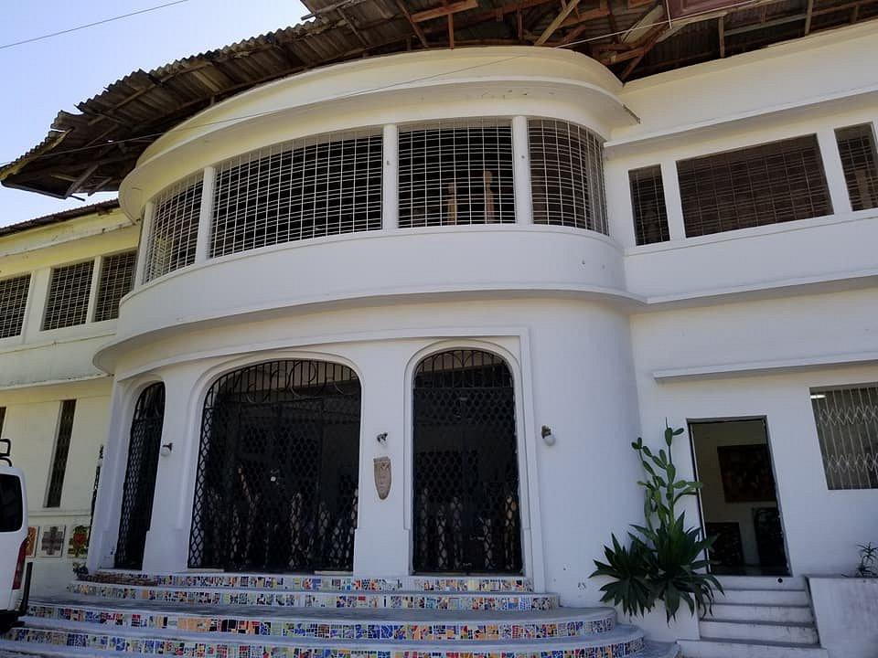
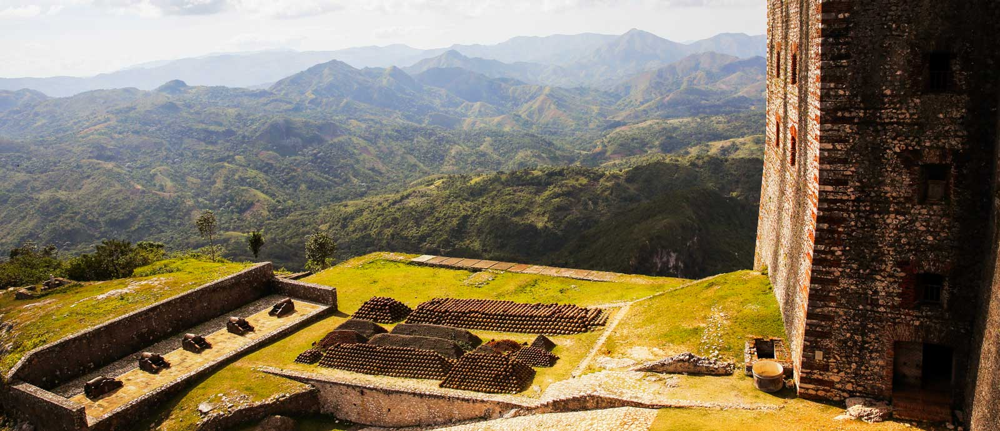
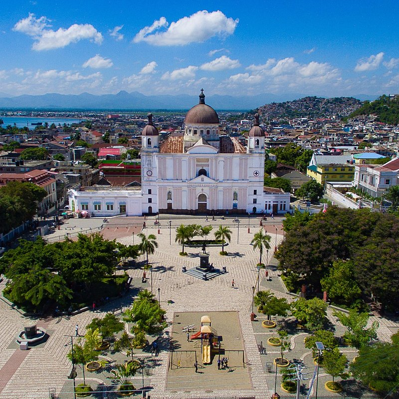
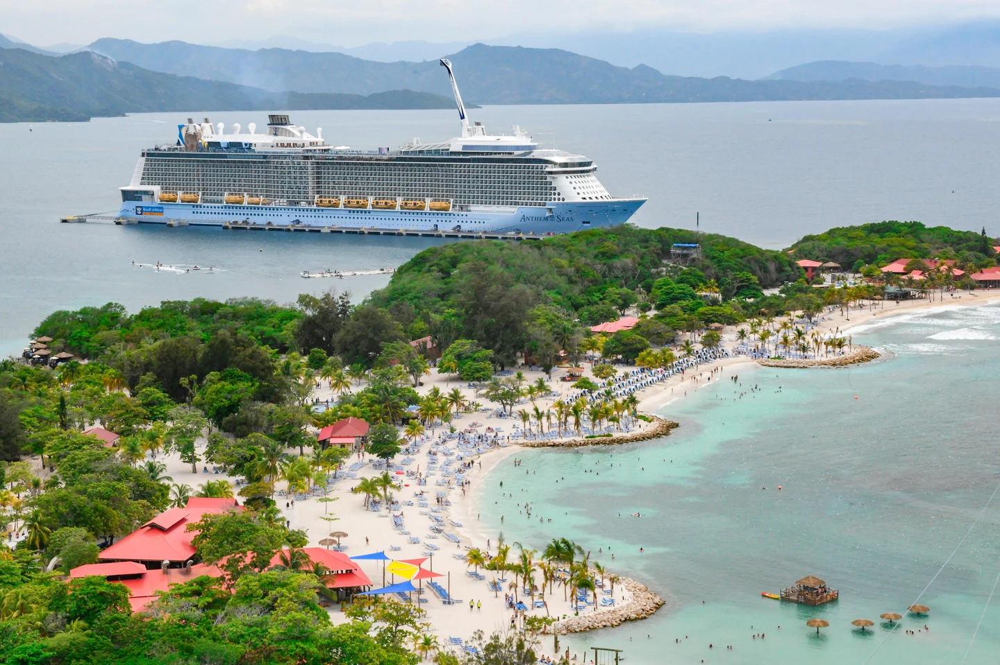
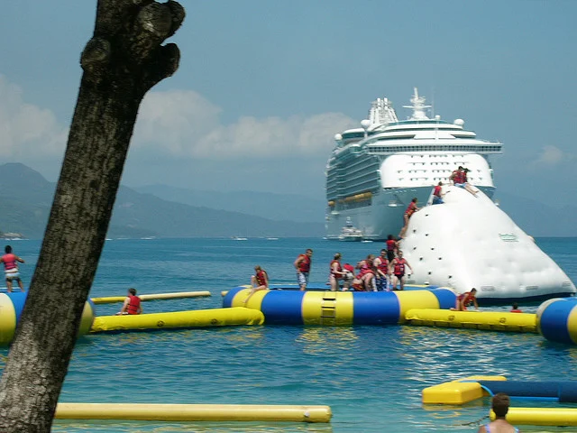

Top things to do in Haiti:
Top things to do in Haiti:

Welcome to Haiti!
Have you ever considered traveling to an island in the carribean? There are many popular ones that are well known vaction spots; for example, Puerto Rico and Jamacia. However, Haiti is also a beautiful place that is worth visiting. Haiti on the world map has mostly mousintains and sea. The media tends to push the nless appealing images, but when t becomes safe to do so, I highly reccomend that people would consider visiting one day.
Haiti is located in North America. According to Pick Visa, Haiti is the third-largest country in the Caribbean, followed by Cuba and the Dominican Republic. DR and Haiti share the same island, so if you wanted to visited the Domican republic as well, you'd be killing two birds with one stone!
Here are my top 5 sights to see in Haiti if you ever decide to visit.
Tourist attractions
Below is a photo of the capital of Haiti, Port-Au-Prince.

If you are looking for museums to visit and historical attractions, the list below will give you insight on what Port-Au-Prince has to offer. These are a few tourist attractions that are worth visiting.
- El-Saieh Art Gallery
Below is a photo of the outside of the gallery. Click it to visit the website for a review of the art pieces you may want to see in person.

Must See!
- Things to do
Citadelle Laferrière, known to locals simply as La Citadelle, is the largest fortress in the Americas. Haitians call it the eighth wonder of the world. Pay this landmark a visit and you'll see why!

The imposing structure was built to demonstrate the power of a newly-independent Haiti, but also to protect its citizens if the French attempted to retake the nation.

Cap-Haïtien Cathedral is a temple affiliated to the Catholic Church that is located in the city of Cap-Haïtien in the Department of the North in the Hispaniola island and to the north of the Caribbean country of Haiti.

Labadee beach is a beautiful beach resort that is owned by Royal Caribbean Cruises. Activites for foodies involving trying a variety of different resturtants.
There is a reef for snorkeling. You can also hike up the verdant mountain to the Dragon’s Breath Flight Line – the longest over-water zipline in the world – or tackle the inflatable obstacle courses at Arawak Aqua Park, floating in the sea.
